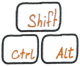
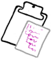

Upgrade to Paid Mode
Paid features include:
|  | Complete keyboard support for all actions along with global Chrome keyboard shortcuts for opening Tabs Outliner and for hibernating current tab or window. |
|  | Clipboard operations for tree manipulation, pasting notes, exporting hierarchies to and from plain text. That's enable possibility to quickly share hierarchies through Skype chat for example. |
| Google Drive backups of the tree created automatically every 24 hours, or manually at anytime. These backups will also enable remote access to your data, as they can be viewed on any PC where you logged-in to your Chrome profile. | |
| Local backup snapshots automatically created much more often then Google Drive backups (several times per hour) - a way to recover from accidental deletions of data created in the tree after the last Google Drive backup. | |
| Development of new features and the project progress. Paid users will be provided by special means to set development priorities for new features and priority support. |
You can check available in the Paid Mode keyboard shortcuts and additional commands by invoking the context menu of any node in the tree. The backup features can be reviewed there on the Backup tab.
Your purchase will fund one additional hour of work (based on an hourly rate of a developer in Ukraine - the country of Tabs Outliner origin) toward new features, bug fixes and enhancements we are all waiting for.
Tags with autocompletion, custom styles, node's icons, multi-select, undo, better and richer notes, better search, real-time backup of all changes, fully synchronized remote editing, mobile access - your money will go directly in the development of all of this. And first of all - in the ongoing architecture rewrite that must hugely improve performance and memory management within the big trees.
Future development of this tool depends on your support.
License Status: Paid Mode License Key Present. Key registered to Undefined.
All features are enabled.
Thank You for your support!
License Status: Paid Mode License Key Present. Key registered to Undefined.
Warning: Current Chrome profile email does not match present Paid Mode License Key.
Possible reason - you are Signed in to Chrome using an another email or applied License Key Is Invalid.
Paid features are disabled.
Please, Sign in to Chrome using the identity that was used to generate Paid Mode License Key or apply Paid Mode License Key corresponded to the current Chrome profile email, to enable them again.
License Status: Paid Mode License Key Present. Application registered to Undefined.
Warning. Chrome is not Signed in. Automatic backup and license key validation is not possible.
Paid features are disabled.
Please to enable them again.
License Status: Paid Mode License Key Present. Application registered to Undefined.
Warning. Permission to access current Chrome profile email is not granted. Email is not accessible. License Key cannot be validated.
Paid features are disabled.
Please, allow email access to enable them. Note that your Chrome profile email will not be transfered outside of this computer.
For any questions contact support@tabsoutliner.com
But you can invoke several Google Drive backups manually, to test and see how they can be accessed.
Apart of losing your data because of possible hard disk fail, lost notebooks, thieves, fire, flood, kids, terrorist attacks, unexpected revolution with the following war and so on, the Chrome local storage (a place where Tabs Outliner stores the tree data in the Free Mode), is very unreliable, and can be lost or cleared any moment for many different reasons, most often during the Chrome automatic updates or sudden crash. You can find a lot of such stories in the reviews section of any Chrome extension that depend on a local storage.
So, if you even slightly value your data, please Upgrade to the Paid Mode and enable automatic backup. They save you from a lot of troubles and worries, and, what's more important, without your payments we will not be able to move the project forward on its father progress.
Backup features that will be available in the Paid Mode
- Automaticaly performed once per day backup of the tree to your Google Drive account.
- Possibility to initiate Google Drive backup manually at any time.
- Local snapshots of the tree created automatically every 5-15 minutes, for restoring deleted hierarchies or windows created after the last Google drive backup.
- Backup files will also be possible to open remotely, from any Tabs Outliner instance installed in your Chrome Profile. Then drag and drop hierarchies from them to the main tree for import or reopen some links directly from the backup.
Note that Google Drive backups enable some form of remote access to your data. Yet it's not the final point, fully synchronized in both directions and real-time implementation, which will replace all of this different type of backups, is still planned and in development now.
Worth to note that backups created by Tabs Outliner do not pass through any of our transit servers (in contrast with many other similar tools) and goes directly into your Google Drive Account. So your private information stays private.
Google Drive Backups
 Requesting backups list from Google Drive... Requesting backups list from Google Drive... |
Keep last backup files.
Local Backups
Local backup snapshots created much more often then Google Drive daily backups. They are useful to restore accidentally deleted hierarchies or unintentionaly closed windows, created in the tree after the last daily backup.
Export
View Exported Tree:Important tip for users with very big trees. With very big tree (tens of thousands of nodes), Tabs Outliner becomes slow and unresponsive. If you experience long pauses and slow operations, it's recommended to export your tree to a file, to archive its content, and start from scratch, with an empty tree, to restore normal performance. MORE...
Tips
- To import back hierarchies from Backup or Exported File, Drag&Drop them (the hierarchies) to the main Tabs Outliner window. You can import the whole tree by dragging its root node. So, for example, to restore a complete tree from a backup, into the fresh instance of Tabs Outliner on a new PC, drag and drop the root node of the backed up tree, from the Backup View, into the Tabs Outliner's Main Window.
- Links can be opened directly from Backup View with Ctrl-Click (Middle-Click) or Shift-Click, as Backup view is just an a regular HTML page. (This shortcuts also works in Main View).
- To delete all Tabs Outliner backup files from Google Drive or check ocupied by them space:
- Go to drive.google.com.
- In the top right, click the settings icon .
- Select Settings.
- Choose Manage Apps.
- Find Tabs Outliner entry. All backup data can be deleted using the Options drop down menu of Tabs Outliner's entry.
- You will lose a possibility to select quickly (bring to front) already opened and partially visible Tabs Outliner window, by clicking almost anywhere inside it (as this will always result in some additional actions).
- One click navigation prone for accidental clicks, for example during drag and drop operations, and this might lead to a lot of undesirable consequences, like unintentional restoring of saved windows with many tabs and so on.
- It's not very friendly for keyboard operations (in Paid Mode), as to utilize them it's handy to have the ability to set keyboard cursor on any node just by clicking on it.
Tabs Outliner is useful for a better overview, more serious manipulations of tabs hierarchies, organizing saved windows, adding notes, better handling of crashed sessions. It's goal to be more a browsing notepad and information organizer, not just a simple tabs manager.
In the Paid Mode enabling this options also adds additional button to the node's hovering menu:
 It's allow to set keyboard cursor on the selected node by mouse click.
It's allow to set keyboard cursor on the selected node by mouse click.
 - it will scroll the tree to display the current focused Chrome window and its tabs at the top of the Tabs Outliner's view.
- it will scroll the tree to display the current focused Chrome window and its tabs at the top of the Tabs Outliner's view.
Automatic backup created only once in 24 hours, so the very last changes will not be backed up. Backup Now Button allow to create Google Drive backup of the tree at anytime, for example when you go from work to home. To ensure that all the latest changes in the tree will be available for review remotely, from other instances of Tabs Outliner.